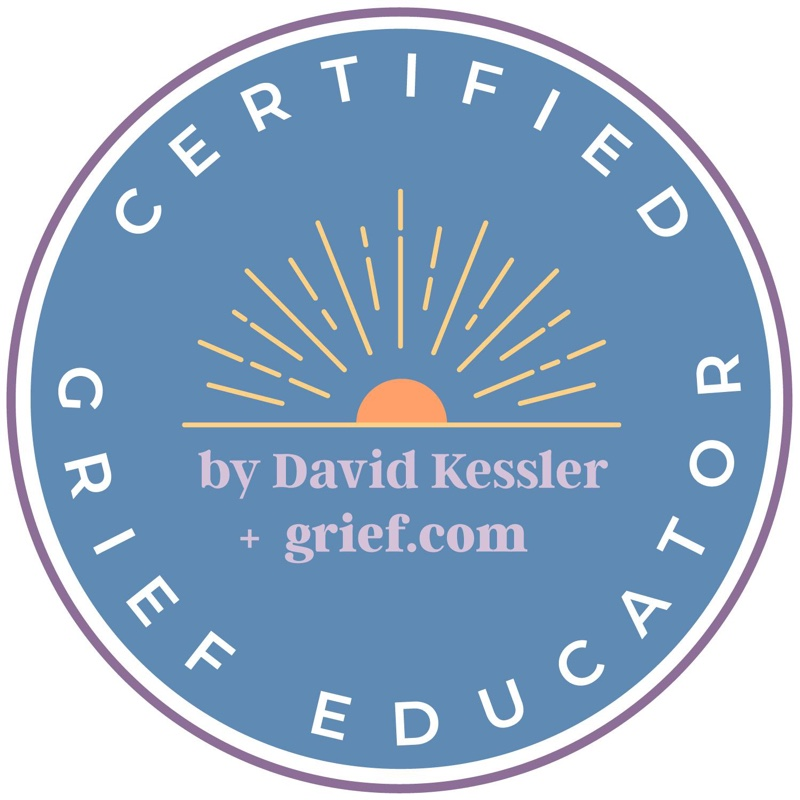

Grief Support
A guide and companion through grief
Grief is profound and often lonely. We live in a grief-illiterate society. People don't need someone to fix them — they need a guide and companion. Someone who understands that loss changes us, and that we can honor our loved ones while creating a new chapter.
I'm here to witness your experience, help you understand what you're feeling, and support you as you find your way forward. I work with people one-on-one, in groups, or online — whatever serves them best.
What is a Certified Grief Educator?
A Certified Grief Educator is committed to providing the highest level of grief support through education, experience, and insights into the often unacknowledged rocky terrain of grief.
I have completed a Certified Grief Educator certificate program designed by world-renowned grief expert David Kessler. I bring his unique methodology, tools, and decades of experience to help people navigate the challenges of grief.
